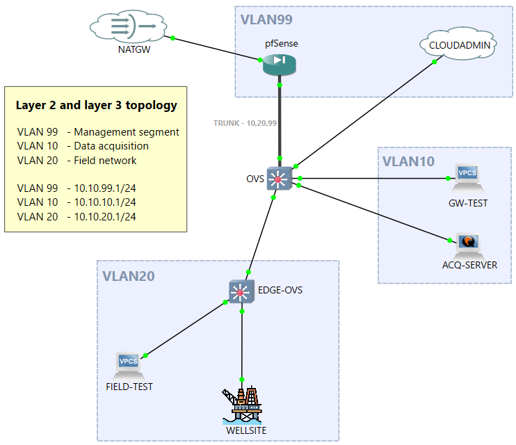
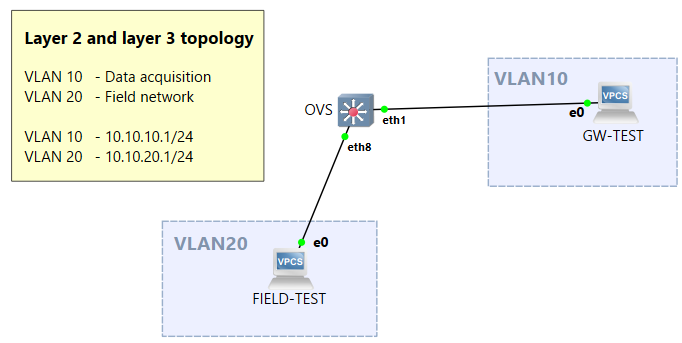
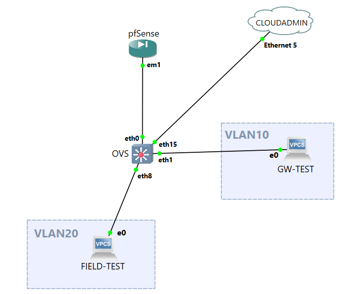
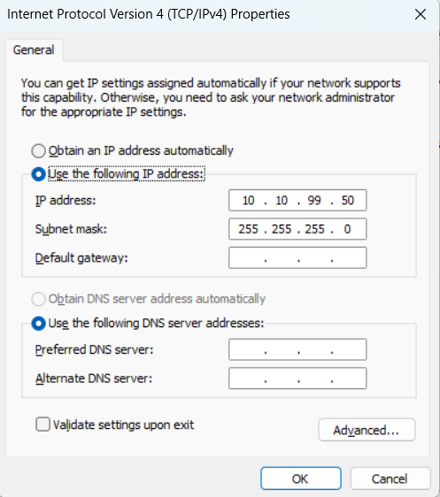
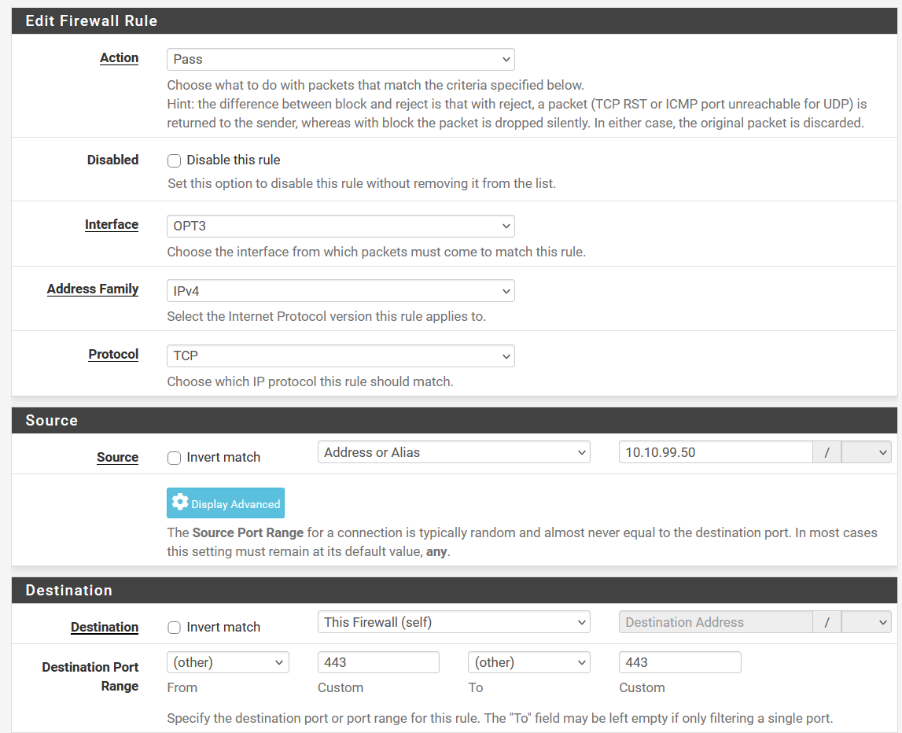
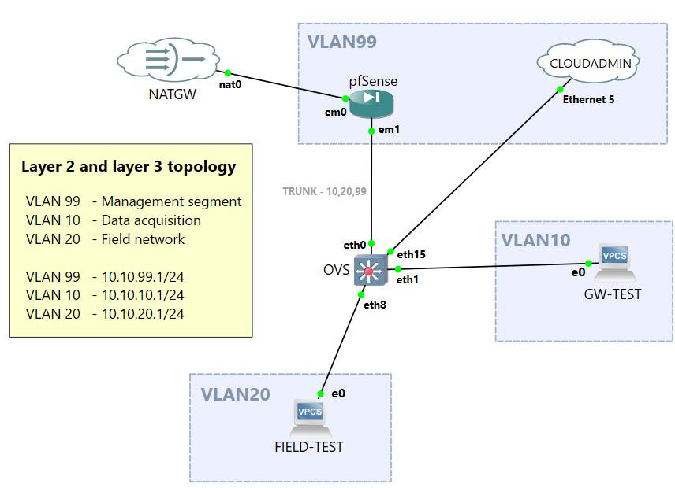
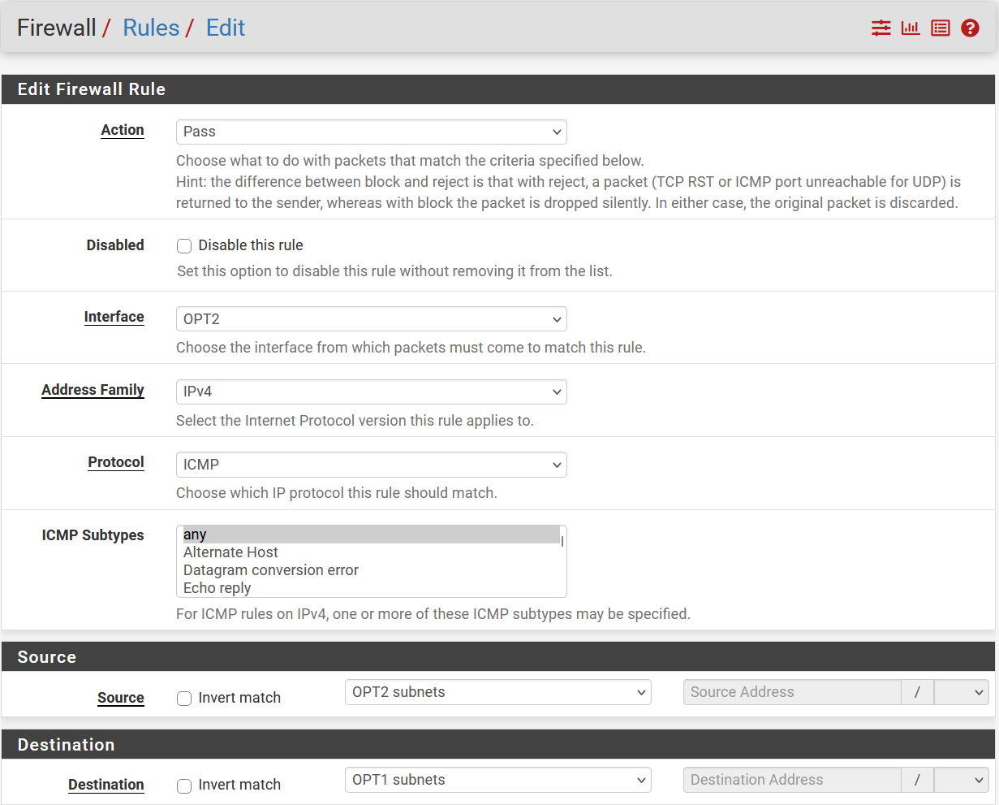
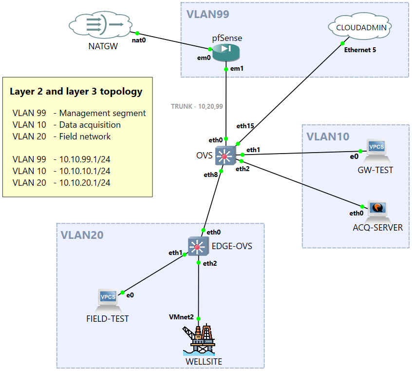
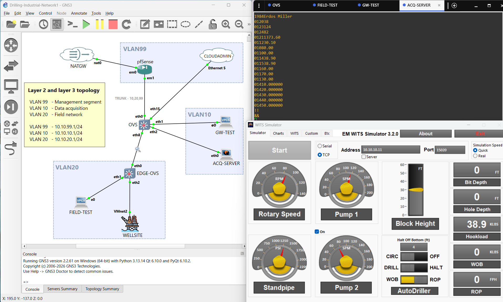

Drill site industrial network simulation in GNS3
November 01, 2026.
In this article we'll simulate an example drill site industrial network in GNS3 software. GNS3 lets you build virtual architectures and displays them in an interactive diagram.
The topology will have Layer 2 and Layer 3 separation and a restrictive firewall policy. Internet access will be possible through a NAT gateway, a simulated cloud connection to an administration network and, a data source in the field. For the latter component, we will use Erdos Miller WITS simulator which will serve as a source of WITS layer 0 data.
In the energy and petroleum industry the WITS protocol, standing for Wellsite Information Transmission Specification. It is an ASCII based communications format and it has major uses for transmitting equipment and component measurements. These measurements carry information on drilling instrumentation, for example: hoisting, rotation speed, mud circulation, rate of penetration (ROP), etc.
The Erdos Miller WITS simulator seems to combine measurements that, in a real rig, could originate from several PLCs, sensors and other instrumentation systems. We will connect the simulator to the GNS3 lab, via an edge switch, route the traffic between VLANs to our acquisition network and store the data.
Table of contents
- Table of contents
- The topology
- Prerequisites
- Using Open vSwitch
- Setting up pfSense
- Configuring interfaces in pfSense
- Configuring IP addresses and accessing pfSense web UI
- Adding Internet connectivity
- Cross VLAN communication
- Testing the simulator in the virtual network lab
- Closing thoughts
The topology
Layer 2. In Open vSwitch, we will create the following VLANs for specific purposes:
| VLAN | Usage | Description |
|---|---|---|
| VLAN99 - MGMT | Management network | Management traffic to a Cloud endpoint (host machine) |
| VLAN10 - ACQ | Acquisition / data integration | Segment for centralized data acquisition / integration / processing servers |
| VLAN20 - FIELD | Field network | Network for edge equipment or systems operating on the field. |
Layer 3. In pfSense we will create three VLAN subinterfaces each with its own /24 range:
| Subinterface | VLAN | Interface address |
|---|---|---|
| em1.99 | VLAN99 - MGMT | 10.10.99.1/24 |
| em1.10 | VLAN10 - ACQ | 10.10.10.1/24 |
| em1.20 | VLAN20 - FIELD | 10.10.20.1/24 |
Refer to the diagram below for a visual representation of the end architecture.

Prerequisites
- VMware (recommended) or VirtualBox
- GNS3
- Wireshark
- Erdos Miller WITS Simulator
1. VMware (recommended or VirtualBox)
After installing GNS3, the first-launch setup wizard will prompt you to choose a mode of virtualization, either local server (through a local Dynamips GNS3 implementation), or with the GNS3 VM, it can be hosted in either Oracle's VirtualBox or in Broadcom's VMware Workstation/Fusion/Player. GNS3 documentation recommends choosing the GNS3 VM deployment and hosting it in VMware for best performance. More details on the setup can be found in the following documentation page:
GNS3 Setup wizard with the GNS3 VM
2. GNS3
For this simulation we will need the GNS3 software, their documentation page shows the minimum requirements as well as a walkthrough of the installation process (the documentation linked before is for Windows, but there are similar documentation pages on MAC and Linux platforms as well). For anecdotal purposes, I have run this simulation in a Windows 11 Home 26H2 system with 12G of memory and a 4 core Intel N100 CPU.
A note on Windows platforms.
I want to briefly mention a workaround I had to implement in my environment. The npcap library seems to have issues with Microsoft Windows KM Test Loopback interfaces. I spent a couple of hours deep into troubleshooting my environment, where I could see successful ARP request and replies, but no Layer 3 traffic initiated, finally finding the answer in a GNS3 forum post:
Alain Ewane Feb 16 2025 at 9:37pm[edited]
I had the same issue, and I fixed the issue in 3 steps.
1- uninstalled NPCAP
2- installed WinPCAP 4.1.3, the most recent.
3- Rebooted my computerFor the GNS3 VM to work correctly on Windows platforms you will need to disable Memory Integrity in Device Security > Core Isolation options, inside Windows Security. This change will require a system restart.
3. Wireshark
Installing Wireshark is also recommended. In the network diagrams created in GNS3 you have the convenient option to right click on a connection and start a packet capture on that interface. Useful for troubleshooting and viewing live traffic on the wire.
Make sure the Wireshark installer doesn't clear your WinPcap installation if you are not intending to replace it with npcap, the installer will ask if you want to do so in one of the installation steps.
4. Erdos Miller WITS Simulator
This component is specific to Windows, luckily I am running GNS3 in a Windows platform, otherwise, I would need to spin up a Windows VM to install the SIM in, and then have it connected to the lab network.
The software can be downloaded for free after filling up a form, there is also a Webinar resource in the same page, showcasing how the simulator works. It can transmit simulated or replayed WITS data via serial or TCP. Another system restart is required after installation.
Using Open vSwitch
We'll start by configuring an off-site switch with the multiple VLANs. In the GNS3 UI, you will have ready-to-use resources grouped by type in the left hand side-menu. Clicking on Browse Switches will show available devices in the category. From here the button to: Add a new template, will be shown at the bottom. Select Install an appliance from the GNS3 server and browse to switches and look for the Open vSwitch appliance. You will notice it runs as a docker container instead of an entire VM, this is good.
After you install the template it will become available for this, and for all future projects. Drag and drop the newly created template to an empty space on the canvas. You can then right-click on it and Start. After a few seconds, double-click on the node to open a console inside it. You should see a Solar PuTTY session start shortly and you will be given a shell prompt in the OVS (Open vSwitch) CLI. The main command to control OVS configuration is ovs-vsctl. The --help option displays its usage.
OpenvSwitch-1:/# ovs-vsctl --help
ovs-vsctl: ovs-vswitchd management utility
usage: ovs-vsctl [OPTIONS] COMMAND [ARG...]
Open vSwitch commands:
init initialize database, if not yet initialized
show print overview of database contents
emer-reset reset configuration to clean state
...
We will now connect two devices to the switch and have them ping each other.
In the side-menu, click Browse End Devices, and drag and drop two VPCS (standing for Virtual PC Simulator) for this test, I will configure their hostnames (name them) FIELD-TEST and GW-TEST. We need to link the PC nodes to the switch. This can be done by hitting Ctrl+L or clicking on the Add a link button in the side-menu.
Set aside switch port eth0 which we will use for the trunk that will connect to the firewall. Connect both Ethernet0 interfaces on the two VPCS' to the switch ports. Opening a shell session to the VPCS nodes, we will be greeted with a CLI with reduced options, but enough for testing network devices. Typing help or ? will display the available commands.
We don't have a DHCP server or a router so we'll have to manually assign IP addresses.
FIELD-TEST> show ip
NAME : FIELD-TEST[1]
IP/MASK : 0.0.0.0/0
GATEWAY : 0.0.0.0
DNS :
MAC : 00:50:79:66:68:00
LPORT : 20007
RHOST:PORT : 127.0.0.1:20008
MTU : 1500
Since we don't have a router, addresses outside of the network range chosen will not be reachable (no default route). So the IP addresses we choose have to be in the same network for this test, e.g. Choosing IP 10.10.10.10/24 for GW-TEST and IP 10.10.20.10/24 for FIELD-TEST will result in no communication:
FIELD-TEST> ip 10.10.20.10/24
Checking for duplicate address...
FIELD-TEST : 10.10.20.10 255.255.255.0
FIELD-TEST> ping 10.10.10.10
No gateway found/16 networks so that 10.10.20.X and 10.10.10.X belong to the same network, or keeping /24 and choosing the same network bits for both, for example both addresses inside 10.10.10.X. This is a simple example, but it showcases how Layer 3 routing will come into play later on.
Setting the two devices in the same network, say 10.0.0.1/24 will allow Layer 3 communication over the switch. We'll now configure a VLAN and, despite the devices being in the same network the traffic will not reach a device that is connected to a switch port that is not tagged with the same VLAN ID.
On FIELD-TEST:
FIELD-TEST> ip 10.0.0.1/24
Checking for duplicate address...
FIELD-TEST : 10.0.0.1 255.255.255.0GW-TEST:
GW-TEST> ip 10.0.0.2/24
Checking for duplicate address...
FIELD-TEST : 10.0.0.2 255.255.255.0FIELD-TEST to GW-TEST:
FIELD-TEST> ping 10.0.0.2 -t
84 bytes from 10.0.0.2 icmp_seq=1 ttl=64 time=11.509 ms
84 bytes from 10.0.0.2 icmp_seq=2 ttl=64 time=6.411 ms
84 bytes from 10.0.0.2 icmp_seq=3 ttl=64 time=2.868 ms
...OpenvSwitch-1:/# ovs-vsctl set port eth1 tag=10
OpenvSwitch-1:/# ovs-vsctl show
...
Port eth1
tag: 10
Interface eth1
...GW-TEST> ping 10.0.0.2 -t
...
84 bytes from 10.0.0.2 icmp_seq=88 ttl=64 time=4.664 ms
84 bytes from 10.0.0.2 icmp_seq=89 ttl=64 time=4.178 ms
10.0.0.2 icmp_seq=90 timeout
10.0.0.2 icmp_seq=91 timeout
...
For now, we'll wire the resources as follows and configure OVS with two VLANs, VLAN20 for the field network

| Resource | Port | VLAN | IP Address |
|---|---|---|---|
| GW-TEST | eth1 | 10 | 10.10.10.10 |
| FIELD-TEST | eth8 | 20 | 10.10.20.10 |
In OVS, tag port
eth1 as 10 and port eth8 as 20. To remove a tag use ovs-vsctl clear port eth0 tag.
The expected result so far is that the two systems will not be able to communicate with each other, since they not only reside in different networks with no Layer 3 router that connects them, but also on different VLANs.
Setting up pfSense
We'll now connect a pfSense firewall to the switch and begin working on the fun stuff. First, the template will have to be created similar to how it was done for the Open vSwitch image. Unlike OVS, pfSense runs as a VM instead of a docker container. GNS3 will guide you through the import and will even download the required image files for you.
After it is imported, instantiate a pfSense firewall by dragging it onto the diagram.
We'll configure port em0 on pfSense as a WAN interface that will be behind a NAT gateway for Internet connectivity, and a subinterface on port em1.99 for management traffic. Let's begin by configuring the latter, so that we can access the pfSense user interface on a web browser. To do that, we need to connect our host machine into the virtual network with a GNS3 Cloud object, and a spare virtual network adapter in Windows.
Instantiate a Cloud object connected to your host (not the GNS3 VM). Configure the object to use a spare VMware VMnet virtual adapter (make sure it is host only and not a NAT or DHCP-enabled adapter in VMware > Edit > Virtual Network Editor). In my case I will use a spare KM test loopback interface which can be added on Windows Device Manager as one of the Legacy Hardware options.
Connect the Cloud Object to switch port eth15 (we will later configure the management VLAN here) and em1 on pfSense to switch port eth0 (this will be our trunk in the future). Refer to the following diagram:

We will add VLAN99 to switch port eth15 and convert eth0 to a trunk port.
OVS:/# ovs-vsctl set port eth15 tag=99
OVS:/# ovs-vsctl set port eth0 trunks=10,20,99OVS:/# ovs-vsctl show
...
Port eth1
tag: 10
Interface eth1
...
Port eth8
tag: 20
Interface eth8
...
Port eth0
trunks: [10, 20, 99]
Interface eth0
...Configuring interfaces in pfSense
To access pfSense web UI, we need not rely on any fancy two-hop port-forwarding configurations. We will rely on a GNS3 Cloud object connected to our host (not the GNS3 VM) and use one of the VMware VMnet virtual interfaces that gets created automatically on installation. We only need to make sure it is host-only and that DHCP is disabled. You can confirm or edit these settings by going into VMware Workstation interface, then clicking Edit > Virtual Network Editor...
We will configure interfaces and subinterfaces pfSense. GNS3 should open a VNC window to connect to pfSense, the only disadvantage is that, unlike in PuTTY/Solar-PuTTY, we can't copy and paste from the host clipboard. Below is the setup for the three VLAN subinterfaces (MGMT, ACQ and FIELD) under physical port em1 in pfSense:
*** Welcome to pfSense 2.7.2-RELEASE (amd64) on pfSense ***
WAN (wan) -> em0 ->
LAN (lan) -> em1 ->
0) Logout (SSH only) 9) pfTop
1) Assign Interfaces 10) Filter Logs
2) Set interface(s) IP address 11) Restart webConfigurator
3) Reset webConfigurator password 12) PHP shell + pfSense tools
4) Reset to factory defaults 13) Update from console
5) Reboot system 14) Enable Secure Shell (sshd)
6) Halt system 15) Restore recent configuration
7) Ping host 16) Restart PHP-FPM
8) Shell
Enter an option: 1
Valid interfaces are:
em0 0c:29:46:23:00:00 (down) Intel(R) Legacy PRO/1000 MT 82540EM
em1 0c:29:46:23:00:01 (down) Intel(R) Legacy PRO/1000 MT 82540EM
em2 0c:29:46:23:00:02 (down) Intel(R) Legacy PRO/1000 MT 82540EM
em3 0c:29:46:23:00:03 (down) Intel(R) Legacy PRO/1000 MT 82540EM
em4 0c:29:46:23:00:04 (down) Intel(R) Legacy PRO/1000 MT 82540EM
em5 0c:29:46:23:00:05 (down) Intel(R) Legacy PRO/1000 MT 82540EM
Do VLANs need to be set up first?
If VLANs will not be used, or only for optional interfaces, it is typical to
say no here and use the webConfigurator to configure VLANs later, if required.
Should VLANs be set up now [y|n]? y
VLAN Capable interfaces:
em0 0c:29:46:23:00:00 (up)
em1 0c:29:46:23:00:01 (up)
em2 0c:29:46:23:00:02
em3 0c:29:46:23:00:03
em4 0c:29:46:23:00:04
em5 0c:29:46:23:00:05
Enter the parent interface name for the new VLAN (or nothing if finished): em1
Enter the VLAN tag (1-4094): 10
...
Enter the parent interface name for the new VLAN (or nothing if finished): em1
Enter the VLAN tag (1-4094): 20
...
Enter the parent interface name for the new VLAN (or nothing if finished): em1
Enter the VLAN tag (1-4094): 99
Enter the parent interface name for the new VLAN (or nothing if finished):
VLAN interfaces:
em1.10 VLAN tag 10, parent interface em1
em1.20 VLAN tag 20, parent interface em1
em1.99 VLAN tag 99, parent interface em1
If the names of the interfaces are not known, auto-detection can
be used instead. To use auto-detection, please disconnect all
interfaces before pressing 'a' to begin the process.
Enter the WAN interface name or 'a' for auto-detection
(em0 em1 em2 em3 em4 em5 em1.10 em1.20 em1.99 or a): em0
Enter the LAN interface name or 'a' for auto-detection
NOTE: this enables full Firewalling/NAT mode.
(em1 em2 em3 em4 em5 em1.10 em1.20 em1.99 a or nothing if finished): em1
Enter the Optional 1 interface name or 'a' for auto-detection
(em2 em3 em4 em5 em1.10 em1.20 em1.99 a or nothing if finished): em1.10
Enter the Optional 2 interface name or 'a' for auto-detection
(em2 em3 em4 em5 em1.20 em1.99 a or nothing if finished): em1.20
Enter the Optional 3 interface name or 'a' for auto-detection
(em2 em3 em4 em5 em1.99 a or nothing if finished): em1.99
Enter the Optional 4 interface name or 'a' for auto-detection
(em2 em3 em4 em5 a or nothing if finished):
The interfaces will be assigned as follows:
WAN -> em0
LAN -> em1
OPT1 -> em1.10
OPT2 -> em1.20
OPT3 -> em1.99
Do you want to proceed [y|n]? y
Writing configuration...done.
One moment while the settings are reloading... done!
*** Welcome to pfSense 2.7.2-RELEASE (amd64) on pfSense ***
WAN (wan) -> em0 ->
LAN (lan) -> em1 ->
OPT1 (opt1) -> em1.10 ->
OPT2 (opt2) -> em1.20 ->
OPT3 (opt3) -> em1.99 ->Control Panel > Network and Sharing Center > Change adapter settings or by running ncpa.cpl.
Go to the Adapter's properties, then click on
Internet Protocol Version 4 (TCP/IPv4) Properties and set a static IP address inside the management CIDR range e.g. 10.10.99.50/24 or in subnet mask notation 10.10.99.50/255.255.255.0.

Configuring IP addresses and accessing pfSense web UI
In the pfSense console we will configure IP addresses on the interfaces as per Table 2. For now we will configure management access and to the rest with the pfSense Web UI.
Enter an option: 2
Available interfaces:
1 - WAN (em0 - dhcp, dhcp6)
2 - LAN (em1)
3 - OPT1 (em1.10)
4 - OPT2 (em1.20)
5 - OPT3 (em1.99)
Enter the number of the interface you wish to configure: 5
Configure IPv4 address LAN interface via DHCP? (y/n) y
Enter the new LAN IPv4 address. Press for none:
> 10.10.99.1
Subnet masks are entered as bit counts (as in CIDR notation) in pfSense.
e.g. 255.255.255.0 = 24
255.255.0.0 = 16
255.0.0.0 = 8
Enter the new OPT3 IPv4 subnet bit count (1 to 32):
> 24
For a WAN, enter the new OPT3 IPv4 upstream gateway address.
For a LAN, press for none:
>
Configure IPv6 address LAN interface via DHCP6? (y/n) n
Enter the new LAN IPv6 address. Press for none:
>
Do you want to revert to HTTP as the webConfigurator protocol? (y/n) n
Please wait while the changes are saved to LAN... The following lines confirm the static IP address assigned to this interface, from which pfSense can be accessed.
The IPv4 OPT3 address has been set to 10.10.99.1/24
You can now access the webConfigurator by opening the following URL in your web browser:
https://10.10.99.1/
Press <ENTER> to continue.The remaining obstacle to connectivity is pf (standing for Packet Filter, I know, very creative name :p), pfSense's stateful firewall. To temporarily disable it, enter option
8 to drop to a terminal and run:
[2.7.2-RELEASE][root@pfSense.home.arpa]/root: pfctl -d
pf disabledIt will be reenabled after a configuration reload or reboot. This should allow us to, at least temporarily, access pfSense web UI to create a firewall rule for the management network, after which we can reenable the firewall. On the browser go to
https://10.10.99.1/ and proceed ignoring the certificate warning. Important: You don't need to follow the Web Interface wizard that you will be presented with (doing so would wipe configurations done through the CLI thus far). Click on the pfSense icon to redirect to the main dashboard.
On the pfSense Web interface go to Firewall > Rules > OPT3 which is the MGMT VLAN99 subinterface. And create a rule that allows the host's adapter static IP address (10.10.99.50) access to pfSense on TCP/443 at 10.10.99.1 (you can also choose the option labeled This Firewall (self))

After saving the rule, make sure to apply the changes. This will cause a firewall refresh. If you accidentally lock yourself out, run
pfctl -d through the VNC console, to temporarily disable the firewall again (pfctl -e will enable it back manually).
Configuring the remaining pfSense interfaces with addresses (either through the CLI or the web GUI) according to Table 2:
-
em1.10 -
em1.20
*** Welcome to pfSense 2.7.2-RELEASE (amd64) on pfSense ***
WAN (wan) -> em0 ->
LAN (lan) -> em1 ->
OPT1 (opt1) -> em1.10 -> v4: 10.10.10.1/24
OPT2 (opt2) -> em1.20 -> v4: 10.10.20.1/24
OPT3 (opt3) -> em1.99 -> v4: 10.10.99.1/24em1
Adding Internet connectivity
If we tried to reach a host on the Internet, it would fail since it does not have a default route (this can be seen with netstat -rWn) nor a DNS server with Internet connection (cat /etc/resolv.conf):
[2.7.2-RELEASE][root@pfSense.home.arpa]/root: ping google.com
ping: Unknown host
To give pfSense Internet access, we can use a NAT object in GNS3. Instantiate a NAT object connected to the host (not the GNS3 VM) by dragging it onto the diagram and link it to the em0 port (WAN) on pfSense. The em0 port should be configured get an IP address via DHCP by default. If this is not use option 2 to configure enable DHCP for the interface's IP address.
After a few seconds of linking it, Internet access should be enabled:
[2.7.2-RELEASE][root@pfSense.home.arpa]/root: ping google.com
PING google.com (142.250.189.14): 56 data bytes
64 bytes from 142.250.189.14: icmp_seq=0 ttl=127 time=23.874 ms
64 bytes from 142.250.189.14: icmp_seq=1 ttl=127 time=20.621 ms
64 bytes from 142.250.189.14: icmp_seq=2 ttl=127 time=19.934 ms
^CWe now have the basic components of the network. Next we will configure firewall rules on pfSense to allow selected traffic to traverse VLANs.

Cross VLAN communication
Going back to the VPCS nodes, we can either manually request an IP and set a default gateway with ip IP_ADDR GW_ADDR or request this information via DHCP, if a DHCP server is running in pfSense:
GW-TEST> dhcp
DDORA IP 10.10.10.10/24 GW 10.10.10.1
GW-TEST> show ip
NAME : GW-TEST[1]
IP/MASK : 10.10.10.10/24
GATEWAY : 10.10.10.1
DNS : 10.10.10.1
DHCP SERVER : 10.10.10.1
DHCP LEASE : 5931, 7200/3600/6300
DOMAIN NAME : home.arpa
MAC : 00:50:79:66:68:01
LPORT : 20008
RHOST:PORT : 127.0.0.1:20009
MTU : 1500FIELD-TEST to GW-TEST will result in a timeout. If we capture packets with Wireshark on the link from OVS to GW-TEST (right click on the link in GNS3 and select Start capture ), we will not see any ICMP traffic being forwarded from pfSense and, even though these devices are connected to the same switch, they are in different VLANs, therefore, different Layer 2 broadcast domains. Even if both were on the same network, they would not be able to communicate as seen in this section.
FIELD-TEST> dhcp
DDORA IP 10.10.20.10/24 GW 10.10.20.1
FIELD-TEST> show ip
NAME : FIELD-TEST[1]
IP/MASK : 10.10.20.10/24
GATEWAY : 10.10.20.1
DNS : 10.10.20.1
DHCP SERVER : 10.10.20.1
DHCP LEASE : 4069, 7200/3600/6300
DOMAIN NAME : home.arpa
MAC : 00:50:79:66:68:00
LPORT : 20010
RHOST:PORT : 127.0.0.1:20011
MTU : 1500
FIELD-TEST> ping 10.10.10.10
10.10.10.10 icmp_seq=1 timeout
10.10.10.10 icmp_seq=2 timeout
10.10.10.10 icmp_seq=3 timeoutFIELD-TEST asking for the router's hardware address and, after pfSense sends a response, a series of pings without response:
Time Source destination Proto Len Info
2026-11-07 18:32:28.46 Private_66:68:00 Broadcast ARP 68 Who has 10.10.20.1? Tell 10.10.20.10
2026-11-07 18:32:28.48 0c:29:46:23:00:01 Private_66:68:00 ARP 46 10.10.20.1 is at 0c:29:46:23:00:01
2026-11-07 18:32:28.49 10.10.20.10 10.10.10.10 ICMP 102 Echo (ping) request id=0x1cc3, seq=1/256, ttl=64 (no response found!)
2026-11-07 18:32:30.50 10.10.20.10 10.10.10.10 ICMP 102 Echo (ping) request id=0x1ec3, seq=2/512, ttl=64 (no response found!)
...
FIELD-TEST> ping 10.10.10.10
84 bytes from 10.10.10.10 icmp_seq=1 ttl=63 time=27.462 ms
84 bytes from 10.10.10.10 icmp_seq=2 ttl=63 time=23.375 ms
84 bytes from 10.10.10.10 icmp_seq=3 ttl=63 time=22.359 ms
^CTesting the simulator in the virtual network lab
Now that we have the building blocks of the network, and we have gone through the steps on how to communicate different nodes, I will add three more devices: an edge switch (OVS-EDGE), an Alma Linux client to serve as an acquisition device (ACQ-SERVER), and another GNS3 Cloud object connected to a spare VMware virtual adapter, that will be used for the simulated field device sending WITS data over TCP (WELLSITE). The result looks like the following:

In the ACQ-SERVER we will run a TCP listener with netcat and redirect the output into a file with ncat -l 15020 |tee ./wits_data.txt. The tee command redirects standard output to both the console and to a file, so we can see the WITS packets that are being written as data is received.
This implementation serves as a minimal proof of concept for an ingestion interface of an edge acquisition platform. It validates network connectivity, TCP transport, and raw WITS data reception across the segmented network architecture we have been working on.

Closing thoughts
Throughout this article, we have demonstrated several core networking concepts, including Layer 2 segmentation with VLANs, Layer 3 routing between subnets, firewall rules, and packet captures with Wireshark at different points in the network. We have also demonstrated how to connect host-based components, such as the WITS simulator, to a GNS3 lab using virtual network adapters.
This lab serves as a proof of concept and an entry point for a deeper dive into WITS and other protocols used in the oil and gas industry. A special thanks to the team at Erdos Miller for developing the simulator and making it available on their website.